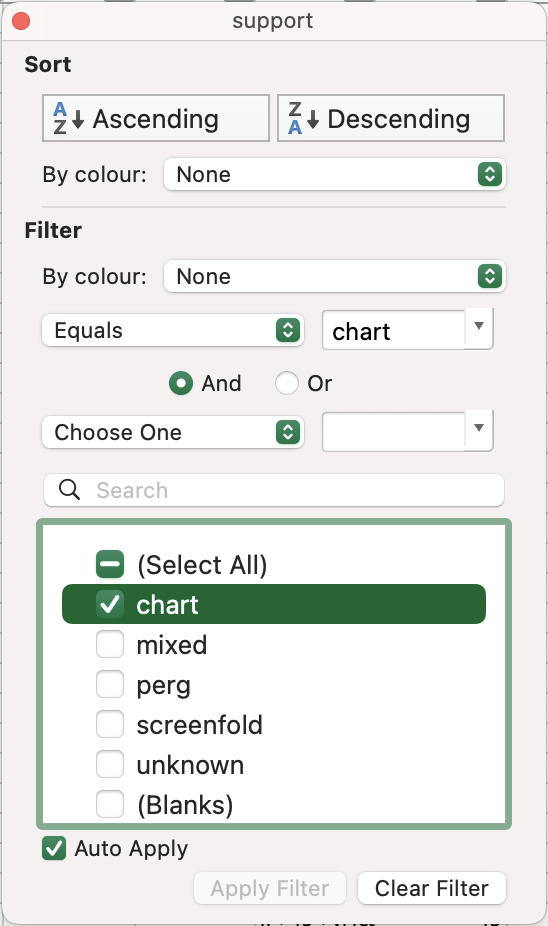

Follow along with these worked examples to gain an idea of the sorts of research questions that the MMOL Tabular Data can help you answer.
The examples here are given for Excel for Mac version 16, and reflect the state of the tabular data at the time this guide was compiled (August 2025), so the exact process and your eventual results may differ from what you see here.
Example 1: Cross-Comparison of Manuscript Contents
Question: What texts appear alongside the works of Catullus in the manuscripts catalogued in MMOL?
In order to answer this question, we need to narrow the data down to just those manuscripts containing the works of Catullus, so that we can look at the other authors that he appears alongside. This is relatively easy in spreadsheet format:
- Open
collection_data.xlsx. - In the
00_overviewtab, navigate to thecontentssection and find theauthor(s) referencedcolumn. - Click/tap on the downwards facing arrow on the right hand side of the column heading, to open the Filter options.
- In the Search bar, enter
Catullus. - The only manuscripts visible should now be the relatively few containing works of Catullus.
By looking at the author(s) referenced column, we are able to reach our conclusion. In the August 2025 version of the data, at least, Catullus work appears in 5 manuscripts alongside the work of Tibullus, once each alongside Ovid, Propertius, and Pseudo-Virgil, and twice on its own.
(To clear existing filters from one query to the next, go to the Data menu, followed by Clear Filters.)
Example 2: Quantitative Codicology
Question: Are the leaf heights of 15th-century paper manuscripts in the catalogue more standardised than those of 15th-century manuscripts on parchment?
To answer this question, we need to narrow the data down in a more multi-dimensional way. We need to find the page heights of all the 15th-century paper manuscripts in the catalogue for which there are sufficient data, and then do the same for all the 15th-century parchment manuscripts. Here are the steps to follow:
- Open
collection_data.xlsx. - In the
00_overviewtab, navigate to theoriginsection and find thenot beforecolumn. - Click/tap on the downwards facing arrow on the right hand side of the column heading, to open the Filter options.
- Since we are only interested in the 15th century, use the number filtering options (
Choose Oneon Mac) to select values that are greater than or equal to 1400. - Navigate to the
not aftercolumn in the same section, and this time filter to select values that are less than or equal to 1500. - Navigate to the
formcolumn in thecodicologysection, and open the Filter options. - Untick all the options except for
codex(since we only want to look at whole manuscripts). - Navigate to the
supportcolumn in the same section, and open the Filter options, selecting justchart(=paper). - Navigate to the
max heightcolumn in theleavessection. This is the column we will use as our measurement, but you could add a column containing an average of themax heightandmin heightcolumns if you so wished, and continue with those data. - In the Filter options for this column, deselect blank cells (this is at the top of the list on Windows, and at the bottom of the list on Mac).
- To visualise the data, select the whole column by clicking/tapping on the column letters (
BHin the August 2025 data), and then go to Excel’sInserttab. - Selecting
Recommended Chartsand thenHistogramshould give you a quick and easy visualisation of the distribution of the leaf heights. - Rename this chart as
15th-Century Paper MSS Leaf Heightsor similar, and save a screenshot of the chart (since Excel updates charts as you change the Filter settings). - We now have our data for paper manuscripts. To get the same for parchment manuscripts, simply leave the other Filter options unchanged and navigate back to the
supportcolumn in thecodicologysection, and replacechartwithperg(=parchment). - Return to the
max heightcolumn in theleavessection, and repeat steps 11–13 to produce the second chart.
By comparing the charts, we can therefore answer our question. The leaf heights of 15th-century parchment manuscripts in the MMOL catalogue appear roughly in line with a normal distribution, suggesting that their values coalesce around an average, but that this is not part of a standardised process. The paper manuscripts, meanwhile, appear to fit into two main categories of page height, suggesting certain standard paper sizes are common in the collection.
(To clear existing filters from one query to the next, go to the Data menu, followed by Clear Filters.)
Example 3: Quantitative Palaeography
Question: What are the 10 most common script types found in manuscripts catalogued in MMOL?
To answer this question, we need to produce counts of manuscripts according to their script type, using Excel’s Pivot Table function. Here are the steps to follow:
- Open
collection_data.xlsx. - In the
04_handstab, select all the data by going to Edit > Select All, or by pressing Command/Control + A. - In the
Inserttab, selectPivot Table, and pressOK. - A new worksheet should appear containing a blank pivot table. In the
Field Namesection of thePivotTable Fieldsmenu that should have appeared on the right, selectshelfmarkandscript. - Drag
shelfmarkfrom theRowsinto theValuescolumn, to gain a count of the manuscripts containing each script type. - On the pivot table itself, click/tap on the downwards facing arrow on the right hand side of the
Row Labelscolumn heading, to open the Filter options. - In the Filter options, select
Top 10in theBy value:filtering options to select the 10 most frequent script types. - Also in the Filter options, deselect blank cells (this is at the top of the list on Windows, and at the bottom of the list on Mac).
- Also in the Filter options, select
Count of shelfmarkin theSort by:dropdown list, and then clickDescending, to ensure that the most frequent scripts appear at the top of the list. - To visualise the data, select any cell in the pivot table and then go to Excel’s
Inserttab. Selecting a 2D pie chart will allow you to show the data as the proportion of a whole, excluding the more unusual or highly specified script types.
By looking at this pie chart and at the pivot table, we can say that, with just over a quarter of examples, Northern Textualis is the most common script type given in the collection (as defined by Albert Derolez (2003), The Palaeography of Gothic Manuscript Books from the Twelfth to the Early Sixteenth Century). However, the limited volume of data available in the catalogue (2,000 entries as of August 2025) means that we must be cautious about drawing too many conclusions from these data about the whole catalogue.